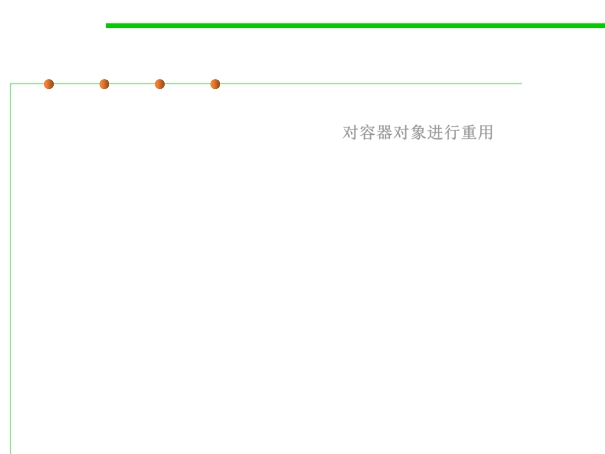

8.3 Code Tuning for Performance Optimization
Reusable containers / collections
▪ Most container objects (e.g., Vectors, Hashtables) can be reused
rather than created and thrown away. 对容器对象进行重用
– While you are not using the retained objects, you are holding onto more
memory than if you simply discarded those objects, and this reduces the
memory available to create other objects.
– You need to balance the need to have some free memory available against
the need to improve performance by reusing objects.
– But generally, the space taken by retaining objects for later reuse is
significant only for very large collections, and you should certainly know
which ones these are in your application.